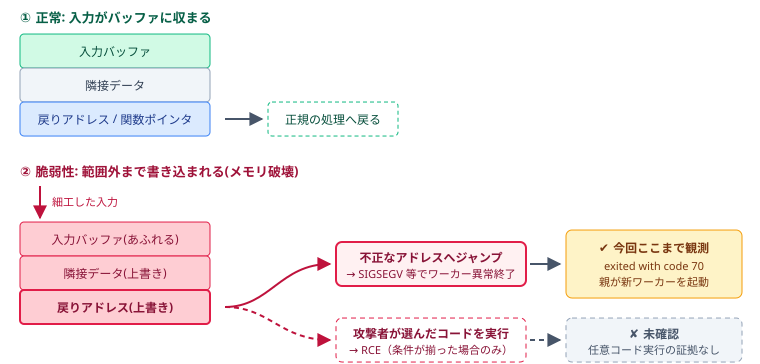

🎯
学習目標
Nginx のドキュメントルート、PHP-FPM の役割、公開領域と非公開領域の分離を理解する。
Nginx のドキュメントルート、PHP-FPM の役割、公開領域と非公開領域の分離を理解する。
src/.env が Web 公開領域にあると、 PHPの脆弱性がなくても Nginx がそのまま返してしまう場合がある。
public を Web 公開ディレクトリに分離し、 Nginx に公開すべきファイルだけを見せる設計にする。
NginxやPHP-FPMを実行するWebサーバー。EC2やVMなどが該当する。
WindowsやMacのブラウザ、curlからWebサーバーへHTTPリクエストを送る。
HTTPを受け取り、静的ファイルの返却や PHP-FPM への転送を行う。
PHPスクリプトを処理するワーカー群。異常終了の観測対象。
APIキーやDB接続情報などを置く。公開してはいけない。
利用者のOSにかかわらず、HTTPSリクエストはLinuxサーバーのNginxへ届きます。 Nginxは静的ファイルを返し、PHPの処理だけをPHP-FPMへ転送します。
今回追加したファイルと、public/ に置くと事故になるファイルを並べて確認します。
これはPHP固有の対策ではなく、Webサーバーの基本設定です。
Nginx、Apache、IISなど、使用するWebサーバーやアプリケーション言語にかかわらず、 URLから公開する領域（DocumentRoot）を必要最小限に限定し、設定ファイル、秘密情報、ソースコード、 バックアップなどを公開領域へ置かないことが基本です。
今回の構成(OK) Dockerfile compose.yaml nginx/default.conf ← 対策後：隠しファイル拒否 / index.php のみ実行 php/php.ini ← 教材用のセキュリティ設定 docs/ ← 補足資料 scripts/ ← 補助スクリプト(Python) src/ ├─ public/ ← 唯一の公開領域 │ ├─ index.php │ ├─ lab.html / preview.html ← 教材ページ │ ├─ images/ │ ├─ .env.sample ← 実習用のダミー値(コピーして .env を作る) │ └─ info.php ← 実習用(phpinfo。確認後に削除) ├─ app/ ← クラス(非公開) │ ├─ Hello.php │ ├─ Security.php │ ├─ View.php │ ├─ views/home.php │ ├─ fatal-demo.php ← 実習用(?demo=fatal) │ └─ upload-demo.php ← 実習用(?demo=upload) ├─ config/config.php ← 設定(非公開) ├─ vendor/ ← Composer(非公開・git管理外) ├─ composer.json / composer.lock ├─ .env ← 秘密情報(非公開・git管理外) └─ .env.example ← ひな形(値は空)
検証中に起きたことを順番に並べた調査記録です。 「A. CVEの検証で確認できた現象」「B. 検証中に発見した別の設定ミス」「C. アプリのコードミスによる RCE」を混同しないために使います。
Nginx コンテナと PHP-FPM コンテナが分離されており、Nginx は 8099 番で公開されていた。
PHP の挙動を観測する部分。ここで分かるのは「ワーカーが異常終了した」までで、RCE 成功とは別。
Input variables exceeded 1000、 Allowed memory size exhausted などを確認。
ログに child 29 exited with code 70 と child 36 started が記録された。
PHP-FPMの親プロセスは新しいワーカーを起動し、別ワーカーがリクエストを処理できたため、サービス全体は停止しなかった。 しかし、外部リクエストでワーカーを異常終了させられる状態は、繰り返されると処理能力を奪うDoS（サービス妨害）の重大な入口になる。
この結果から確認できたのは異常終了と可用性への影響であり、任意コード実行（RCE）の成功までは証明していない。

検証中に見つかった別の問題。PHP の脆弱性ではなく、Nginx の公開範囲と配置の問題。
curl.exe -i http://127.0.0.1:8099/.env に対して 200 OK が返り、 API_KEY=dummy が見えてしまった。
Dotfile を拒否する location を追加後、 403 Forbidden を確認。
Nginx に ./src/public だけをマウントし、 ドキュメントルートを /var/www/html/public に変更した。
古い設定のまま動いていた nginx では public/.env が 200 OK で取得できた。nginx -s reload で dotfile 拒否を反映すると 403 になった。 「設定の反映漏れ」でも漏洩する、という実例。
PHP や C ライブラリに脆弱性がなくても、アプリのコードの書き方次第で RCE は成立する。A とは原因も対策も別。
$_GET / $_POST の値を検証せずに system()、exec()、shell_exec()、 passthru()、バッククォート、popen() へ渡すと、 ; id や | cat /etc/passwd のようなOSコマンドインジェクションで任意のコマンドが実行される。
シェル実行のほか、eval() / assert() への入力、 unserialize() による不正なオブジェクト注入、 include / require に外部入力を使う（LFI/RFI）、 アップロードされた .php が公開領域に置かれて実行される、といった実装ミスも RCE になる。
対策: 危険な関数を使わない／disable_functions で無効化／ やむを得ない場合は escapeshellarg() と許可リスト検証／アップロード先を実行不可にする。 これらは CVE のパッチ適用(A の対策)では防げないため、コード側での修正が必要。
compose.yaml
services:
php:
build: .
volumes:
- ./src:/var/www/html
nginx:
image: nginx:stable
ports:
- "8099:80"
volumes:
- ./src:/var/www/html:ro
- ./nginx/default.conf:/etc/nginx/conf.d/default.conf:ro
location / {
try_files $uri $uri/ /index.php?$query_string;
}
この設定そのものが悪いのではありません。 ただし、.env のようなファイルが ドキュメントルート内にあると、 $uri に一致してそのまま返されます。
location ~ /\.(?!well-known(?:/|$)) {
deny all;
}
先頭がドットのファイルへのアクセスを遮断します。 ただし、これは補助的な防御です。 根本対策は public 分離です。
location ~ \.php$ {
fastcgi_pass php:9000;
include fastcgi_params;
fastcgi_param SCRIPT_FILENAME $document_root$fastcgi_script_name;
}
URL で指定された .php を、Nginx が php-fpm へそのまま渡します。 PHP を動かすための一般的な設定ですが、DocumentRoot にある .php はすべて実行対象になります。
教材の初期状態はこの設定だけが有効で、location = /index.php と return 404 の設定は、対策用にコメントアウトされています（TODO）。
対策では、この設定をコメントアウトしてから右の2つを有効にします。 location ~（正規表現）は先に書いたものが優先されるため、 この設定が残っていると、あとから return 404 を有効にしても効きません。
# 実行するのは front controller の index.php のみ location = /index.php { fastcgi_pass php:9000; include fastcgi_params; fastcgi_param SCRIPT_FILENAME $document_root/index.php; } # それ以外の .php は 404 location ~ \.php$ { return 404; }
= の完全一致は正規表現より優先されるため、/index.php だけが PHP として実行されます。 SCRIPT_FILENAME も index.php に固定しているので、 URL でファイル名を変えて別の .php を動かすことはできません。
ただしこれも補助的な防御です。public に不要な .php を置かず、 アップロード先を公開領域の外に置くことが根本対策です。
php.ini は PHP 自体の挙動を決める設定ファイルです。 Nginx の設定が「どのファイルを外に見せるか」を決めるのに対し、 php.ini は「PHP が動いたときに何ができるか」を制限します。 つまり、Nginx と php.ini は別々の防御層です。
php:
volumes:
- ./php/php.ini:/usr/local/etc/php/conf.d/99-security.ini:ro
open_basedir が /var/www/html:/tmp に限られるため、 /usr/bin/composer を読めず、制限付きの php コンテナでは Composer が動きません。 そこで php.ini を適用しない composer サービスを別に用意しています。
セキュリティ設定が「実際に効いている」ことの分かりやすい例です。
| 設定 | 値 | 防ぐもの・意味 |
|---|---|---|
| 情報の露出 | ||
| expose_php | Off | レスポンスヘッダ X-Powered-By に PHP のバージョンを出さない。 |
| display_errors | Off | エラー内容(ファイルパス、SQL、設定値)を画面に出さない。log_errors と error_log でログへ出す。 |
| 外部読み込み・ファイルアクセス | ||
| allow_url_fopen | Off | fopen() や file_get_contents() などで、外部 URL をファイルのように開けなくする（SSRFや外部データ取り込みの抑止）。 Off でもローカルファイルの読み書きは禁止されません。 ローカルファイルは open_basedir やファイル権限で許可された範囲内から操作できます。 |
| allow_url_include | Off | 外部 URL の include / require を禁止（リモートファイルインクルード対策）。 Off でもローカルファイルの読み込みは禁止されません。 ローカルファイルは open_basedir で許可された範囲内から読み込めます。 |
| open_basedir | /var/www/html:/tmp | PHP が触れるディレクトリを限定。/etc/passwd などを読まれにくくする。 |
| disable_functions | exec, system, popen ... | OS コマンド実行系の関数を無効化。万一コードを実行されても被害を小さくする。 |
| ストリーム・アップロード | ||
| phar.readonly / phar.require_hash | On | phar 経由の自動デシリアライズ攻撃を抑える。 |
| file_uploads | Off | アップロード機能を無効化。教材で使うときだけ On にして、サイズ・件数の制限と組み合わせる。 |
| upload_max_filesize / post_max_size / max_file_uploads | 1M / 2M / 1 | 巨大リクエストによる資源消費を抑える。Nginx の client_max_body_size 2m とそろえる。 |
| 資源・DoS 対策 | ||
| max_input_vars | 1000 | POST の項目数の上限。超えると Input variables exceeded 1000 の警告になる(今回のログ)。 |
| memory_limit / max_execution_time / max_input_time | 128M / 10 / 10 | メモリと処理時間に上限。超えると Allowed memory size exhausted のように止まる。 |
| セッション | ||
| session.use_strict_mode / use_only_cookies | 1 | 未発行のセッションIDを受け入れない、URL でのID受け渡しを禁止(セッション固定化対策)。 |
| session.cookie_httponly / samesite | 1 / Lax | JavaScript から Cookie を読めなくする、他サイトからの送信を制限する(XSS、CSRF の被害軽減)。 |
| session.upload_progress.enabled | Off | アップロード中の進捗をセッションに書き込む機能を止める。file_uploads = Off でも、multipart POST でセッションデータが作られる経路を残さない。 |
| session.cookie_secure | 0 | この環境は HTTP のため 0。HTTPS で運用する場合は 1 にする。 |
一般的なWebアプリでは 256M を初期値にし、実測したピーク使用量と PHP-FPMの同時実行数から調整します。これは予約量ではなく、PHPプロセス1つあたりの上限です。
| 用途 | 目安 | 考え方・注意点 |
|---|---|---|
| 小規模サイト・軽量API | 128M | 処理が単純で、画像加工や大きなデータ集計がない場合。 |
| 一般的なWebアプリ | 256M | 迷ったときの無難な初期値。監視結果を見て増減する。 |
| WordPress・画像処理・重いバッチ | 256M〜512M | プラグイン数や画像サイズで増える。安易な増量は原因調査の代わりにならない。 |
| Composer（CLIのみ） | 1G〜2G / -1 | Webリクエストとは分離し、一時的なCLI実行に限定する。 |
WordPressは一般的なフレームワークのように「公開する public/」と「非公開の設定・アプリコード」を 明確に分離した構成ではありません。通常はDocumentRoot直下に、公開用PHP、管理機能、設定ファイル、更新対象のコードが同居します。 そのため、Webサーバー設定、PHPの実行権限、ファイルの書き込み権限の影響範囲が大きいことが構造上の注意点です。
この教材での推奨方針
「画面から簡単に作れる」ことと「安全に継続運用できる」ことは別です。制作会社、フリーランス、プログラミングスクールなどが 導入の容易さだけを理由に勧めるケースがありますが、実運用にはOS・Webサーバー・PHP・MySQL・WordPress本体・プラグイン・テーマ・ バックアップ・監視・復旧までを継続して管理する責任があります。その担当者、予算、更新手順を用意できない場合は、 静的サイトや管理範囲の小さいサービスも検討します。
設定と公開領域が近い
DB接続情報や認証用キーを含む設定ファイルがWordPress本体と同じ階層に置かれます。通常はPHPとして実行され内容は表示されませんが、 PHP連携の故障、バックアップファイルの放置、Webサーバーの誤設定があると漏洩につながります。
管理機能もWeb公開
管理画面とログイン入口が公開URLに存在します。認証を突破されると、投稿だけでなくプラグイン導入やコード変更まで許す構成になり得ます。
コードが広く散在
多数の入口ファイル、本体、テーマ、プラグイン、アップロードが公開ツリー内に共存します。個別ファイルの拒否設定だけで守るのは難しく、更新漏れや権限ミスが影響します。
典型的なDocumentRoot直下 index.php wp-config.php ← DB認証情報・秘密鍵を含む設定 wp-login.php ← 公開されたログイン入口 wp-admin/ ← Web管理画面 wp-includes/ ← WordPress本体コード wp-content/ ├─ plugins/ ← 外部コード・更新対象 ├─ themes/ ← 外部コード・編集対象 └─ uploads/ ← Webユーザーの書き込み先 wp-*.php ← 複数の公開PHP入口
wordpress@production: access-audit
要注意wordpress@production:/var/www/html$ id www-data
uid=33(www-data) gid=33(www-data) groups=33(www-data)
wordpress@production:/var/www/html$ find . -maxdepth 2 -printf '%M %u:%g %p\n'
-rw-rw-r-- www-data:www-data ./wp-config.php # DB接続情報
drwxrwxr-x www-data:www-data ./wp-admin # Web管理画面
drwxrwxr-x www-data:www-data ./wp-content/plugins # PHP追加・更新可能
drwxrwxr-x www-data:www-data ./wp-content/themes # PHP編集可能
drwxrwxr-x www-data:www-data ./wp-content/uploads # 必要な書き込み先
wordpress@production:/var/www/html$ printf '--- access path ---\n'
[browser] /wp-admin/ ── 管理者認証 ──▶ [PHP:www-data]
[PHP:www-data] ── download/update ──▶ plugins・themes・WordPress本体
[PHP:www-data] ── DB credentials ──▶ MySQL（付与された権限の範囲）
RISK: 管理者アカウントが侵害され、Webプロセスがコード領域へ書き込める場合、
管理画面からの操作がサーバー上のPHPコード改変へ直結する。
SAFER: code=root:root / read-only、uploadsのみwww-dataが書き込み可能、
MySQLはWordPress専用ユーザー＋必要最小限の権限。
| 主な危険 | 起こり得ること | 基本対策 |
|---|---|---|
| 古い本体・プラグイン・テーマ | 既知の脆弱性を使った侵入、改ざん、情報漏洩。 | 不要なものを削除し、検証後すぐ更新。保守されている製品だけを使う。 |
| 管理画面への総当たり | 弱いパスワードや使い回しによるアカウント乗っ取り。 | 長く固有なパスワード、MFA、ログイン試行制限。管理者IDを共有しない。 |
| ファイルアップロード | 偽装ファイルやPHPが置かれ、実行される。 | 種類・サイズを検証し、アップロード先でPHPを実行させない。 |
| 過剰な書き込み権限 | 侵入後に本体やテーマへバックドアを埋め込まれる。 | Webユーザーの書き込み先を限定し、安易な 777 を避ける。 |
| 設定・バックアップの公開 | wp-config.php のコピー、SQL、ZIP、ログから認証情報が漏れる。 | wp-config.php は可能ならDocumentRootの1階層上へ。バックアップは公開領域外に置き、Webサーバーでも拒否する。 |
| Web経由のインストール・更新 | 管理画面から外部コードをダウンロードし、サーバー上のPHPを追加・上書きできる。 | 本番はデプロイ工程で更新し、Webプロセスからコード領域への書き込みを外す。管理画面のファイル編集も無効化する。 |
| MySQLへの強い権限 | Webインストーラーや侵害されたWordPressから、DB作成・変更・削除や情報取得を行われる。 | WordPress専用DBユーザーに必要最小限の権限だけを与え、外部公開しない。DB管理ツールを同じ公開領域へ置かない。 |
| 無防備なXML-RPC・REST連携 | 不要な入口が総当たりや大量リクエストに悪用される。 | 利用状況を確認し、不要な機能は無効化またはレート制限する。 |
メモリエラーは、重いプラグイン、巨大画像、無限ループ、過大な検索処理の症状かもしれません。 まずログとピーク使用量を確認し、原因を直したうえで必要な分だけ増やします。 上限を大きくしても、脆弱性やマルウェアを防ぐ効果はありません。
phpMyAdminはブラウザからMySQLを操作できる便利な管理ツールですが、同時にデータベース管理機能をWebへ公開する入口でもあります。 WordPressと同じサーバーへ常設し、誰でも到達できるURLで公開する構成は推奨しません。侵害時の操作範囲はログインしたMySQLユーザーの権限そのものです。
Internet ──▶ /phpmyadmin/
login / SQL / import / export
phpMyAdmin ── credentials ──▶ MySQL
GRANT ALL ON *.* → 全データベースへ影響
限定ユーザー → 対象DB・必要操作だけ
| 運用方法 | 評価 | 理由・対策 |
|---|---|---|
| インターネットへ常時公開 | 非推奨 | URL変更だけでは防御にならない。削除または外部から到達不能にする。 |
| IP制限・VPN・踏み台経由 | 条件付き | 到達経路を限定し、HTTPS、追加認証、MFA対応の入口、ログ監視を組み合わせる。 |
| 必要時だけローカル起動 | 推奨 | 127.0.0.1 のみにバインドし、SSHトンネルなどで一時的に利用して終了後に停止する。 |
| DBアカウント | 最小権限 | MySQLのrootを日常利用せず、対象DBと必要な操作だけに限定した個別ユーザーを使う。 |
PHP-FPMは、Webリクエストから実行するPHPを通常 www-data という一般ユーザーで動かします。 管理者の root で動かさず、侵害された場合に操作できる範囲を小さくするためです。 この教材ではNginxとPHP-FPMが別コンテナなので、Nginx側の実行ユーザーとは別に考えます。
-rw-r----- 1 root www-data config.php drwxr-x--- 2 root www-data app/ drwxrwx--- 2 www-data www-data storage/
# 実行ユーザーを確認 docker compose exec php id www-data # ファイルの所有者と権限を確認 docker compose exec php ls -la /var/www/html
DockerやKubernetesを使わず、EC2やVMへ直接配置する場合は、コードを配置する deploy ユーザーと、PHPを実行するWebユーザーを分けるのが一般的です。 Webユーザーにソースコードの書き換えを許可せず、侵害された場合の被害を限定します。
| ユーザー | 主な役割 | 権限の考え方 |
|---|---|---|
| ubuntu | OS更新、パッケージ導入、障害調査 | EC2の初期管理ユーザー。必要な管理操作のみ sudo を使う |
| deploy | SSH接続、コード配置、依存関係の導入、リリース切り替え | アプリ更新に必要な権限だけを持たせる |
| Webユーザー www-data / nginx / apache |
PHPの実行 | コードは読み取りのみ。必要な保存先だけ書き込み可能にする |
| root | OSやサービス全体の管理 | 通常のログインやデプロイには使わない |
本番環境では、管理権限を持つ ubuntu と、アプリ更新専用の deploy を分けると、鍵の漏えいや操作ミスによる影響を限定できます。
所有者と権限の例
# PHPコード：deployだけが更新できる -rw-r----- deploy www-data index.php # 保存領域：Webユーザーも書き込める drwxrwx--- deploy www-data storage/ # 秘密情報：公開領域外で読み取りを限定 -rw-r----- deploy www-data .env
実際のWebユーザー名は環境で異なります。Ubuntu・Debianでは www-data、 Amazon Linuxでは nginx や apache の場合があります。 httpd は一般にApacheのサービス・プロセス名であり、ユーザー名には apache が使われます。 PHP-FPMのpool設定にある user と group を確認してください。
通常のファイル送信には multipart/form-data を使います。 HTMLフォームでは method="post" と enctype="multipart/form-data" を指定します。 multipart形式は、通常の入力値とファイル本体を境界（boundary）で区切り、1回のHTTPリクエストで送る形式です。 application/x-www-form-urlencoded のままでは、ファイル入力をPHPの $_FILES として送信できません。
HTMLフォーム
<form
action="/?demo=upload"
method="post"
enctype="multipart/form-data">
<input
type="file"
name="training_file"
required>
<button type="submit">
送信
</button>
</form>
curlで同じmultipart POSTを送信
# PowerShell curl.exe -F "training_file=@.\sample.txt" ` "http://localhost:8099/?demo=upload" # Linux / macOS curl -F "training_file=@./sample.txt" \ "http://localhost:8099/?demo=upload"
boundaryで区切られた送信イメージ
POST /?demo=upload HTTP/1.1 Content-Type: multipart/form-data; boundary=----WebKitFormBoundaryABC123 ------WebKitFormBoundaryABC123 Content-Disposition: form-data; name="title" 研修資料 ------WebKitFormBoundaryABC123 Content-Disposition: form-data; name="training_file"; filename="sample.txt" Content-Type: text/plain ファイルの内容 ------WebKitFormBoundaryABC123--
同じboundaryが入力値とファイルを区切り、末尾の -- が本文の終わりを示します。 boundaryはブラウザや curl -F が自動生成します。
フォームの name="training_file" が、PHP側の $_FILES['training_file'] に対応します。 PHPは受信したファイルを一時ファイルに保存するため、ファイル全体をメモリに保持せず扱えます。 curl -F はmultipart形式とboundaryを自動生成するため、 Content-Type ヘッダーを手作業で指定しないでください。
$upload = $_FILES['training_file'] ?? null;
if ($upload !== null && $upload['error'] === UPLOAD_ERR_OK) {
// PHPの一時アップロードとして受信された
}
file_uploads=Off では、multipart POSTを送ってもファイルは $_FILES に入りません。On にすると受信できますが、 MIMEタイプ、サイズ、保存名、保存場所をサーバー側で検証する必要があります。
php://input は、HTTPリクエスト本文を生のストリームとして読む仕組みです。 JSONや application/octet-stream など、multipartではない本文をPHP側で直接読む場合に使います。
結論：php://input を使うだけでは、メモリ問題を根本的には防げません。 全体を一度に読めばメモリを消費し、分割して読む場合も受信サイズの上限が必要です。
全体をメモリへ読む例（大容量には不向き）
$data = file_get_contents('php://input');
file_get_contents() は本文全体を1つの文字列にするため、 ファイルが大きいほどPHPのメモリを消費します。加工やコピーで使用量がさらに増えることもあります。
分割して処理する例
$input = fopen('php://input', 'rb');
$output = fopen('/tmp/upload.bin', 'wb');
while (!feof($input)) {
$chunk = fread($input, 8192);
if ($chunk === false) {
throw new RuntimeException('read error');
}
fwrite($output, $chunk);
}
fclose($input);
fclose($output);
この例では8KBずつ処理するため、ファイル全体をPHPの文字列として保持しません。 実運用では、読み込んだ合計サイズを数えて上限を超えたら中止する処理も必要です。
ボタンを押すと、修正前後の処理の流れとログ例を図で確認できます。 説明用の表示であり、実際のHTTP通信やPHP処理は実行していません。 実際の動作確認は「設定変更実習」で行います。
[diagram] ready [hint] 表示したいリクエスト例のボタンを押してください。 [note] 実際の通信は行いません。
PHP を動かす方法は主に2つあります。この教材は左の Nginx + PHP-FPM ですが、 古い資料や共有サーバでは右の Apache + mod_php が今も多く使われています。 違いを知っておくと、設定ミスの見つけ方も変わります。
| 観点 | Nginx + PHP-FPM | Apache + mod_php |
|---|---|---|
| 処理の流れ | Nginx自身はPHPを実行せず、対象リクエストをFastCGIでPHP-FPMへ転送する | Apacheに組み込まれたmod_phpが、転送を挟まずPHPを実行する |
| PHP の実行場所 | 別プロセス(FastCGI で接続) | Apache のワーカー内部 |
| 静的ファイル | Nginx が返す(PHP は通らない) | Apache が返す(同じプロセスが PHP も抱える) |
| .env の扱い | dotfile 拒否のルールがなければ返す | 既定で拒否されるのは .ht* のみ。.env は返してしまう |
| 実行される .php | 設定で index.php だけに限定できる | 既定では DocumentRoot 内の全 .php |
| 設定の場所 | php.ini / pool 設定 / default.conf | php.ini / php_admin_value / .htaccess |
| ディレクトリ単位の設定 | Nginxの設定ファイルに記述し、location で転送対象を限定する | AllowOverride の設定によっては、.htaccess で上書きされる |
| Docker イメージ | php:8.4.26-fpm + nginx | php:8.4.26-apache 1 コンテナ |
設定が正しくても、PHP や OS、ライブラリが古いままでは守れません。 今回の .env 漏洩のような「設定ミス」とは別に、「既知の脆弱性」という問題があります。
PHP 5系・7系の更新が先送りされた主な理由：
使い続けることによる問題：
修正版のリリース前後に、脆弱性の内容（CVEやセキュリティ情報）が公開されることがあります。 攻撃者は「パッチが出た = 古い版には穴がある」と知ることができ、 更新が遅れるほど、狙われやすい状態が長く続きます。
インターネット上は、バージョンを調べて既知の脆弱性を試す自動スキャンが常に動いています。 expose_php = Off はバージョン推測を難しくしますが、 古いまま放置してよい理由にはなりません。
サポート終了後は、新しい脆弱性が見つかっても修正版が出ません。 PHP 8.2 は 2026年12月31日 でセキュリティサポートが終了します。 そこから先は、使い続けるほど「直せない穴」が増えます。
更新対象は同じでも、Dockerではイメージを作り直し、EC2・VMではOS上のパッケージを更新します。
| 更新対象 | Docker環境 | EC2・VMなどのLinux本番サーバー |
|---|---|---|
| PHP本体 | FROM php:8.x-fpm のタグを更新し、イメージを再ビルド | OSのパッケージまたは保守対象リポジトリから更新し、PHP-FPMを再起動 |
| OS・システムライブラリ | --pull --no-cache で新しいベースイメージから再ビルド | apt や dnf でセキュリティ更新を適用。必要に応じて再起動 |
| Nginx・Apache | 新しいイメージをpullし、コンテナを再作成 | Webサーバーのパッケージを更新し、構文確認後にreloadまたはrestart |
| Composer依存ライブラリ | Composer用コンテナで composer audit と更新を実行 | アプリ配置ディレクトリで composer audit を実行し、テスト後に更新 |
| カーネル・ホスト基盤 | コンテナではなくDockerホスト側を更新。Docker Engine・OSも保守対象 | Linuxカーネル、OpenSSL、SSHなどを更新し、必要ならEC2を再起動 |
# 1. Dockerfile の FROM を修正版へ変更 # FROM php:8.4.26-fpm FROM php:8.4.27-fpm # 2. PHP を再ビルドし、Nginx の新版を取得 docker compose build --pull --no-cache php docker compose pull nginx # 3. 新しいイメージでコンテナを再作成 docker compose up -d --force-recreate # 4. 適用された PHP バージョンを確認 docker compose exec php php -v # ライブラリの既知の脆弱性を確認 docker compose run --rm composer audit # update は内容を確認し、テストできる状態で実行 docker compose run --rm composer update
# Ubuntuの更新候補を確認 sudo apt update apt list --upgradable # OS・ライブラリを更新 sudo apt upgrade # 適用されたバージョンを確認 php -v nginx -v # 設定を確認してNginxへ反映 sudo nginx -t sudo systemctl reload nginx # アプリの依存ライブラリを確認 cd /var/www/app/current composer audit
いいえ、別の種類の問題です。
CVE 側は「バージョンを上げる」、設定側は「設定を見直す」という、対策の方向が異なります。 両方を一つの事故として混同すると、パッチを当てただけで「直った」と誤解したり、 設定を直しただけで CVE 対応を忘れたりします。
いいえ、これも .env と同じB. 設定側の問題です。
PHP-FPM ワーカーの異常終了（A）は PHP 自体の挙動、.env の公開や 任意の .php の実行（B）は Nginx・php.ini の設定。 「何が原因で、どちらの対策（更新 or 設定変更）が必要か」を分けて考えることが大切です。
try_files 自体は一般的な設定です。危険なのは、 機密ファイルがドキュメントルート内にあり、 それを遮断する設計になっていないことです。
いいえ。ルールは補助的な防御です。nginx の設定を変更しても reload しなければ反映されず、 実際に今回も古い設定のまま 200 OK で取得できました。 機密ファイルは公開領域の外に置くのが原則です。
セキュリティサポートは 2026年12月31日 までです(バグ修正は 2024年12月で終了済み)。 期限後に脆弱性が見つかっても修正版は出ないため、8.3 以降への移行が必要です。 この教材の環境は 8.4 で、セキュリティサポートは 2028年12月31日までです。 トップページの「環境チェック」にも同じ注意を表示しています。
一般には「ドキュメントルートの分離」「Web ルート分離」 「公開領域と非公開領域の分離」などと説明されます。
今回の教材の初期状態では、index.php だけに限定する設定がコメントアウトされ、 任意の .php を php-fpm に渡す設定だけが有効です。 これは「設定ミス」というより、対策前の初期状態です。 本物のアプリでは、実行する .php を限定するか、 不要な .php（phpinfo() など）を置かないことが対策になります。
= の完全一致が、~ の正規表現より優先されます。一方、正規表現の location 同士では先に書いたものが優先されます。 任意の .php を実行する location ~ \.php$ が先に残っていると、後ろに return 404 を書いても効きません。
いいえ。exec() などの危険な関数を無効化できても、 実行できる .php そのもの（例えばアップロードされた Web シェル）が ファイル読み書きや別の処理を行うことは防げません。 disable_functions は被害を小さくする補助的な防御で、 根本対策は「実行する .php を限定する」「余計な .php を置かない」ことです。
いいえ。session.upload_progress.enabled は、multipart/form-data の POST を受け取るだけでアップロード進捗用のセッションデータを作る機能です。 file_uploads = Off でファイル保存を止めても、この機能自体は別に動くため、 セッションへの書き込み経路（セッション悪用の糸口）を残さないために、Off にしておきます。
include や require に外部 URL を渡せるようになり、 攻撃者が用意したコードをそのまま実行されてしまう可能性があります（リモートファイルインクルード）。 教材の初期状態ではこの設定が On になっており、check_php_ini.py でも NG と判定されます。 Off にするのが対策です。